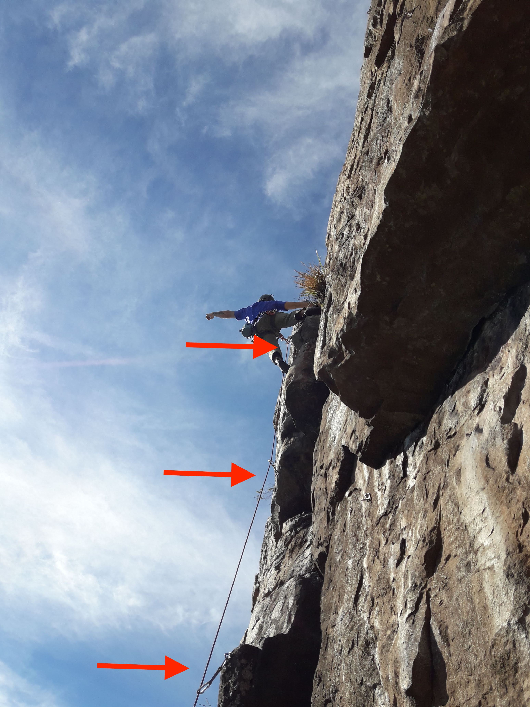
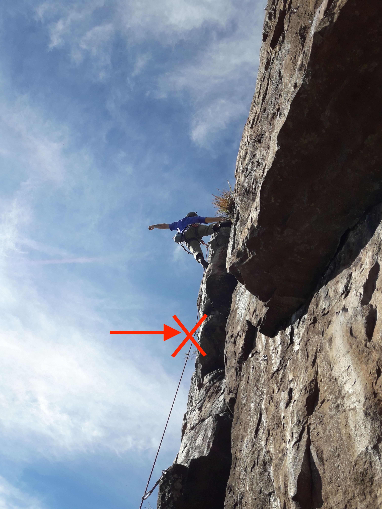
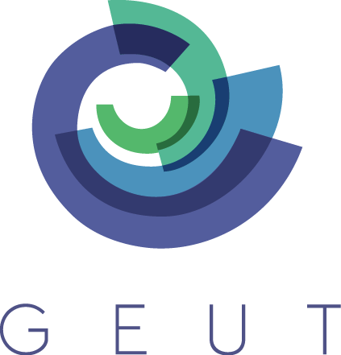
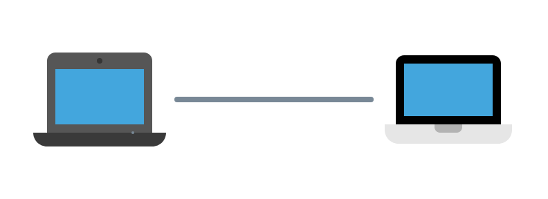
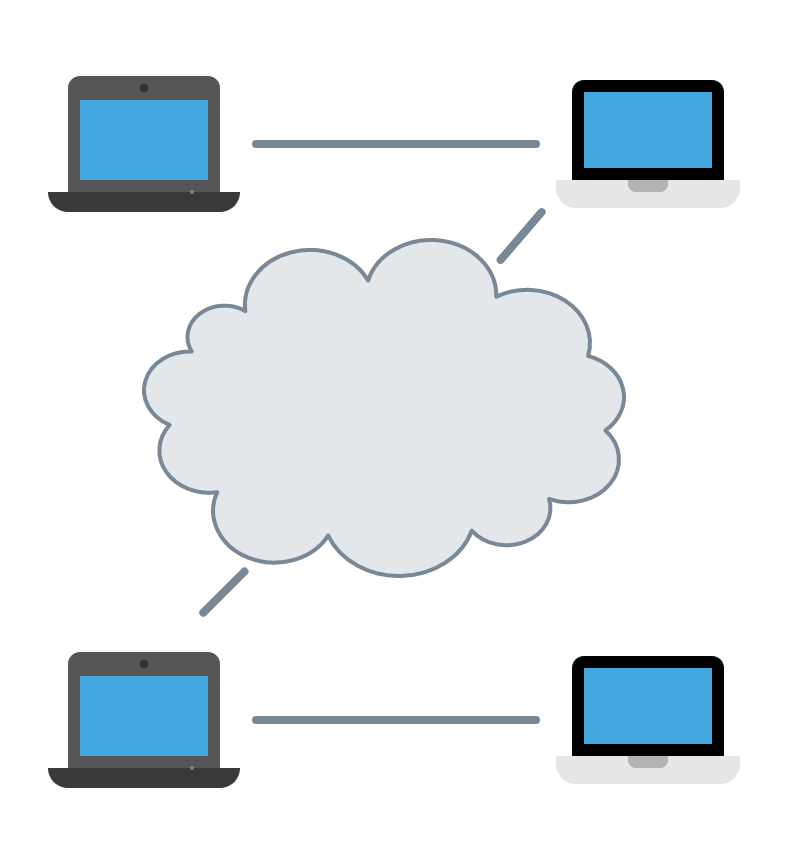

Hola Colombia! Es un gusto estar aca, voy a comenzar rapidamente mostrandoles algunas noticias recientes. Para invitarlos a reflexionar.
Service is down
Creo que todos algunas vez nos vimos afectados por una de estas fallas en algun momento.
Tragedy of the commons
🎥
- ver link: https://es.wikipedia.org/wiki/Tragedia_de_los_comunes
La tragedia de los comunes se refiere a una vieja teoria que desgraciadamente sigue estando en uso digamos. Que implicitamente se usa para justificar el quitarle control de un bien comun, como el amazonas, a la gente, a sus pobladores nativos a sus comunidades, para entregaserlo a un privado.
Elinor Ostrom, ganadora del nobel en economia en 2009 critico esta teoria. Demostrando todo lo contrario.
real life
Pero no necesitamos ser tan tragicos tampoco. Por ejemplo, un hobie que me fascina es escalar. Comence hace poco y es una actividad que quiero seguir practicando por mucho tiempo. Estas en contacto con la naturaleza, es genial pero tambien puede ser peligroso. Mortalmente peligroso.
Por suerte, hay muchos mecanismos de seguridad y nos ensenan a usarlos desde el primer momento.

real life
Siempre hay redundancia (concepto q estamos familiarizados) en los mecanismos de seguridad. Cada una de las flechas en este caso senala un punto de anclaje, esto quiere decir que si me caigo quedo colgando del ultimo punto. Una pequeña caida y puedo seguir, nada grave.

real life ☠️
Pero que sucede si uso solo un punto de anclaje. Esto incrementa el riesgo. Ahora si me caigo todo depende de un solo seguro y si ese seguro falla, puede ser el final.
Esto parece un single point of failure...
CENTRALIZATION ISSUES
Todos estos ejemplos tienen un factor comun, centralizacion como un problema. Caidas de servicios, malas administraciones, fallos de privacidad, caida total del sistema.
Ahora bien, que podemos hacer nosotros programadores para cambiar esto? Porque sepan que tenemos un rol en todo esto. Al menos desde el punto de vista tecnologico.
Si tan solo hubiera otra manera de hacer las cosas...
Building Up
on Dat
Bienvenidos a "Building Up on Dat."
Vamos a ver como Dat nos puede ayudar a desarrollar nuevos tipos de aplicaciones decentralizadas.
v1 - Jun 2019 - NodeConf Colombia

Diego 👋
aka: deka, dk, dɛkɑ
GEUT is a young but solid company looking forward to create new apps that led us to new ways of interaction. We are doing some good work these days on the decentralized space.
Super quick intro to Dat
So let's get into Dat, let's see super quickly what it is, the most important parts and some code examples. Finally we'll talk a bit about what's next?!
- Dat is a community-driven project
- Dat is also a powerful decentralized data sharing tool
Dat is a
community-driven project
@karissa
*
@mafintosh
*
@joeahand
*
@rangermauve
*
@tinchoz49
* ...
Entonces Dat es un proyecto mantenido por la comunidad. Esto quiere decir que hay comites abiertos donde distintos desarrolladores que invierten tiempo en el proyecto colaboran y por supuesto tienen lugar en decidir el futuro del mismo. Es una organización abierta.
Community matters.
Dat is also a powerful decentralized data sharing tool🛠
Y para que usamos este proyecto tan bien organizado? Para desarrolar aplicaciones decentralizadas. Es decir aplicaciones donde el control regresa al usuario pero este no esta aislado sino que puede colaborar. Somos animales sociales.
Dat de un vistazo, estos son algunos de los componentes digamos importantes de los que quiero hablarles en esta charla.
Feeds y un sistema de replicación.
Y cómo compartimos información? A traves del dat link
Public Key 🔑
Discovery Key 🧭
Un dat link es una clave publica y una clave de descubrimiento.
con la clave publica vamos a poder leer y firmar el contenido, bueno esto ultimo solo el writer.
Con la discovery key, dat tiene una forma segura para buscar a otros peers que esten buscando el mismo contenido. Es una porcion de la public key.
Let's go deeper
append-only log →
hypercore
Hypercore es el componente fundamental de Dat. Podriamos ubicarlo en lo mas profundo del core. Es una estructura de datos similar a una lista. Luego vamos a intercambiar esta lista con otros pares en el proceso de replicacion.
a Feed
- simple data structure
- immutable
- logical order
- easy to index → efficient data sharing
Otro nombre que le damos a esta lista, es feed. Lo van a ver por todos lados si se meten a mirar el codigo.
swarm
network of peers with a common interest
Discovery
Local network

mDNS
Internet

DHTs
To be part of a swarm you will need some discovery mechanism
Replication Process
As we've seen in Dat like in Node, everything is about streams.
The replication process describes how to peers will share their feeds. Streams are a powerful interface for sharing almost anything. By the use of streams, dat is capable of syncronizing others feeds peers.
The process of replication looks like this. I mean, you will see this or somethin similar almost everywhere in the Dat ecosystem, its like a pattern.
Fundamental Blocks
FS abstraction for Dat 👍
hyperdrive makes things super easier to work with by giving us a notion of working with a FS
2 feeds
Recuerdan el concepto de feed de hypercore? En dat compartimos usualmente 2 feeds. Esto estructura como compartimos el contenido.
metadata feed
eg: names, sizes, pointers to content
Un feed de metadata, que incluso podemos descargar bajo demanda.
content feed
actual file contents
Y otro feed con el contenido actual. Esto es por ej, distinto a git. Donde metadata y contenido estan juntas, esto fue una decision de diseno que le dio muchos beneficios a dat.
Dat API for the browser.
Handles swarm connection and storage
Input: dat link
Output: hyperdrive
dat-cli, dat-desktop
- swarm connection → discovery-swarm
- storage → dat-storage
- returns hyperdrive
similar to dat-js
Local-first Apps
- ink and switch coined the term here:
software that enables both collaboration and ownership for users
2 types of apps
Old fashioned apps 🥃
Cloud apps ☁️
7 principles
-
No spinners
-
Cross-device sync
Your data won't live on a single device
-
Network is optional
No internet required. Also we can make use of local networks (ie: mdns, bt)
-
Seamless collaboration
Excellent collaboration mechanisms is a must to have. Real-time.
-
The long now
Data preservation through the years, ie: you can continue accessing the data for a long time in the future
-
Security and privacy by default
Make use of local encryption + end-to-end encryption
-
You retain ultimate control
eg: being physically able to copy some data from one place to another
What's next?
So far...
Centralization Issues
- Single point of failure
- Losing control of data ownership
- Lack of Privacy
Dat achievements
- Solid progress
- Local-first apps
- Genuine interest on a better DX → better ecosystem
- Exciting times ✨
Conclusion
Los ultimos años la tendencia fue llevar todo a la nube. Centralizamos. Y eso facilito muchas cosas pero tambien trajo problemas, algunos servicios de los que todos dependemos estan en crisis, otros han violado nuestra privacidad. Todo esto ocurre en un ecosistema donde no sabemos como generar un modelo de crecimiento sustentable que satisfaga el open source y al mundo corporativo. Tenemos muchas dudas, pero con lo que vimos hoy al menos una certeza, con el modelo centralizado ya estamos encontrando limites. Tambien sabemos que hay otro mundo decentralizado, que esta ahi para explorarlo, que no conocemos sus limites, nunca le dimos una oportunidad y este parece ser un buen momento para hacerlo. La tecnologia esta avanzando y nosotros tenemos un papel. Qué camino vas a elegir?
Follow @dtn_conf
😉